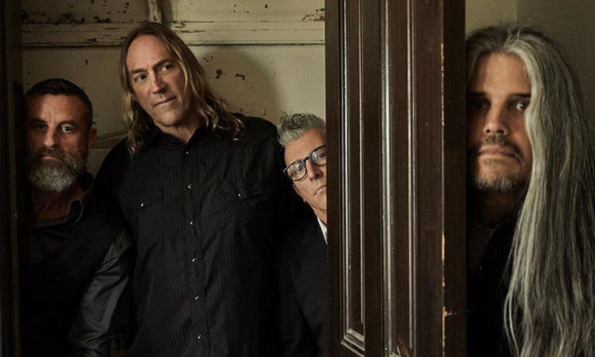
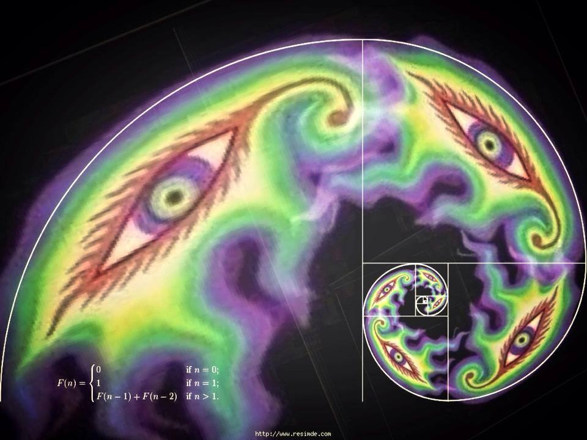
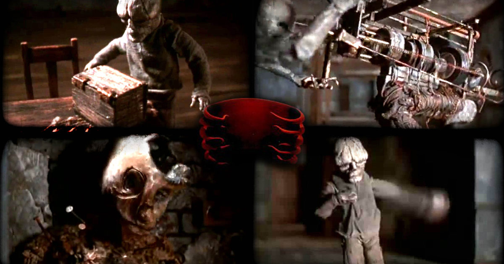

TOOL: Una forma de ver la vida a través de la música
Publicado el:
Por: Enzo Mascena
Categoría: Análisis Musical
1. De Undertow a Fear Inoculum: La evolución del sonido
Desde sus inicios en Los Ángeles a principios de los 90, Tool demostró que no iba a ser una banda común de Metal Alternativo. Con el paso de los años, el sonido crudo de sus primeros discos mutó hacia composiciones atmosféricas, complejas y sumamente espirituales.

"No estamos acá para entretenerte, estamos acá para ayudarte a descubrir qué hay detrás de tu propia mente."
2. Lateralus y el uso matemático del Espiral
El disco 'Lateralus' (2001) es considerado la obra cumbre de la banda. La canción principal es famosa porque la métrica de las sílabas que canta Maynard James Keenan sigue perfectamente la secuencia numérica de Fibonacci, creciendo y decreciendo como un espiral.
Puntos clave del tema Lateralus:
- Métrica basada en los números 1, 1, 2, 3, 5, 8...
- Letra que invita a "separar el cuerpo de la mente" y trascender.
- Polirritmias demenciales creadas por el baterista Danny Carey.

3. El inquietante universo visual de Adam Jones
La experiencia de escuchar a Tool no está completa sin sus videos musicales. El guitarrista Adam Jones, gracias a su experiencia previa en efectos especiales en Hollywood, dirige los videoclips utilizando la técnica de Stop-Motion, creando esculturas surrealistas y oscuras que complementan las canciones.

Comentarios de la Comunidad
Agregado el
Que buena pagina, ahi me sucribi, Saturno Asciende